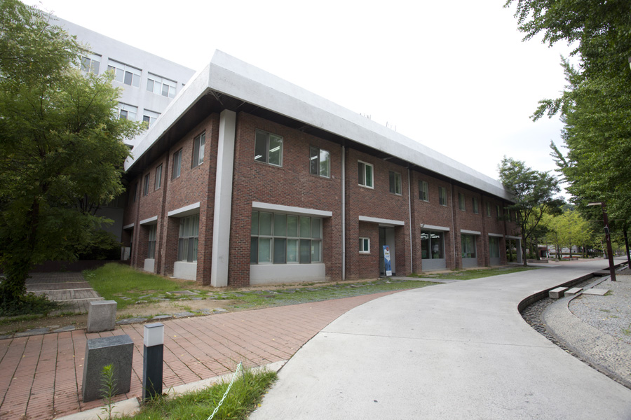

창학관

건물소개
대전대학교 최초로 지어진 건물이다. 백제 고성인 갈현산성을 바라보고 있으며, 왼편으로는 계족산을, 오른편으로는 식장산을 마주하고 있다. 또한 창학관 아래로 보이는 ‘새울’ 마을은 설립자이신 고 지산 임달규 선생께서 한국전쟁당시 잠시 피난생활을 한 인연이 있다고 전해진다. 5층 건물로서 1981년 준공되었다. 가운데 중정을 놓은 것은, 설계상 없었는데 공사중 암반이 나온 때문이라고 한다.
설계 CNU건축 이재성
시공 우진건업
준공 1981
1F 전산실습실, 주차관리실, 북카페
2F 방송공연예술학과, 역사문화학과, 교수연구실, 계단강의실
3F 국가안전융합학부, 국어국문창작학과
4F 서예디자인학과, 서예디자인학과 실습실
5F 서예디자인학과 실습실